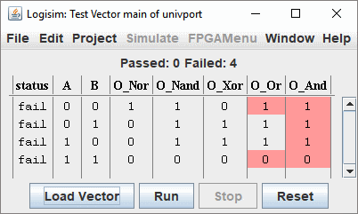

בדיקת וקטור חלון
מחלון Test vector ניתן לטעון וקטור בדיקה מקובץ ו-Logisim יבצע בדיקות במעגל הנוכחי. יש רק חלון וקטור בדיקה אחד עבור הפרויקט וה- הטבלה תשתנה כדי לשקף את המעגל המדומה בחלון הפרויקט. שים לב עם זאת שמודול הווקטור המבחן מריץ עותק נפרד של סימולטור המעגל ולכן אינו מפריע לסימולציה ב- חלון הפרויקט ואינו מושפע מהסימולציה זו.
לדוגמא, נבדוק את המעגל להלן. מעגל זה נותן תוצאות של חמש פונקציות לוגיקה משתי כניסות. יש לו שגיאה שער ה-NAND התחתון צריך להיות שער AND.

קובץ הבדיקה נראה כך.
A B O_Nor O_Nand O_Xor O_Or O_And O_AB[2] 0 0 1 1 0 0 0 00 0 1 0 1 1 1 0 01 1 0 0 1 1 1 0 10 1 1 0 0 0 1 1 11
כדי להתחיל את המבחן, בחר בתפריט | סימולציה |→| בדוק וקטור | ולאחר מכן השתמש בלחצן "טען וקטור". בחר את קובץ הוקטורים שבנית. הסימולציה מבוצעת מיד ומוצגת טבלה עם התוצאות.

כל פלט שגוי יסומן באדום. שורות עם פלטים שגויים ממוינים בחלק העליון של החלון.
פורמט הקובץ הווקטור פשוט. השורה הראשונה מכילה את כותרות העמודות אשר מתאים לשם האותות. אם רוחב הסיביות גדול מ-1, יש צורך לעשות זאת ציין בין סוגריים מרובעים. דוגמה C[8]. הנתונים עבור כל מצב בדיקה נמצאים בתוך שורות הבאות. מתעלמים מהשורות הריקות. כל דבר אחרי תו "#" הוא הערה.
השורות הנותרות מפרטות כל ערך מופרד על ידי רווח או טאב. הערכים יכולים להיות בהקסדצימלי, אוקטלי, בינארי או עשרוני בסימן. ערכים הקסדצימליים חייבים לקבל את הקידומת "0x". ערכים אוקטליים חייבים לקבל את הקידומת "0o". מספרים בינאריים ועשרוניים להבדיל לפי מספר הספרות: ערכים בינאריים חייבים תמיד להיות בדיוק כל כך הרבה ספרות כרוחב העמוד; לערכים עשרוניים אסור שיהיה אפס מוביל וייתכן שיהיה א סימן שלילי.
הנה דוגמה לקובץ וקטור בדיקה:
#test vector for adder 4bit A[4] B[4] O[4] C_in C_out 0000 0000 0000 0 0 0000 0000 0001 1 0 0xf 0xf 0000 1 0
בהתאם לייצוג של ערכים הקסדצימליים, אוקטליים או בינאריים, האות הקטנה "x" מאפשרת לציין ארבעה, שלושה או סיביות "לא חשובות". לדוגמה ערך 101xx הוא ערך בינארי של חמש סיביות, כאשר שתי הסיביות האחרונות לא צוינו, ו-0x1ax5 הוא ערך הקסדצימלי עם פעמיים ארבעה ביטים לא מוגדרים. לא ניתן להשתמש בתווים כלליים כאלה בסימון עשרוני.
שורת פקודה: כדי להקל על בדיקות אוטומטיות, תכונת הבדיקה הוקטורית ניתן להפעיל משורת הפקודה באופן הבא:
java -jar logisim-evolution.jar -testvector <circuitname> <vector.txt> <project.circ>
התוצאה של בדיקה מוצלחת תהיה בפלט הסטנדרטי (stdout) זה למשל
טוען וקטור בדיקה "testv1b.txt" ...
ביצוע 4 וקטורים...
1
2
3
4
מעבר: 4, שגיאה: 0
ובמקרה של כישלון
טוען וקטור בדיקה "testv1a.txt" ...
מפעיל 4 וקטורים...
1
2
3
ob = 0 (צפי 1)
4
ob = 1 (צפי 0)
הצלחה: 2, שגיאה: 2
הערה: פלט השגיאה (stderr) יקרא:
שגיאה בבדיקת וקטור 3:
שגיאה בוקטור 4 בדיקה:
המשך: מדריך למשתמש.